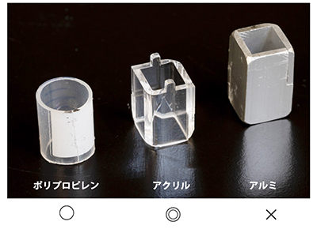

Frozen block / 凍結ブロックの準備
The frozen blocks for CoMBI have some unique features. They are designed to prevent crystallization of ice, prevent cracking, reduce expansion due to freezing water, improve the success rate of image registration, and improve the quality of surface rendering.
CoMBI用の凍結ブロックには、様々な工夫が施されています。目的は、「氷晶防止」「クラック防止」「凍結による膨張低減」「ズレ補正の成功率向上」「Surface Renderingの質向上」、です。
Specimens/標本の準備
- Requirement of fixation, type of fixative, and other conditions depends on the type of specimen. Also, it depends on how you use the sections. Verify the conditions of sample preparation for each experiment.
- Sucrose immersion may be required for some specimens. For example, neuronal tissues can easily crack, thus sucrose immersion is essential to prevent it. Verify for each experiment.
- Staining specimens lightly with tannic acid provides better contrast of internal structures. See Sci Rep 2021, 11:13108, Fig.7 for detail. I am using 1% tannict acid in PBS or 90% EtOH, for 1 hr, 2 hr, or overnight. Darkness of staining can be controlled by incubation time.
-
If a tannic acid-stained specimen is left at 4°C or room temperature, the color will gradually darken. Normally, we freeze the specimens immediately after staining and photograph them. If the stained frozen blocks are needed to be stored for long period, keep them below -30 degree.
-
固定の要不要、固定液種類など、各標本によります。また、切片をどう染色したいかにもよります。各実験で条件検討をしてください。
- スクロース浸漬の必要性は、標本の種類や大きさよって異なります。私個人的には、スクロース不要な臓器や小さい標本の場合が多いです。神経組織はクラックができやすく、それを抑止するためにスクロース浸漬が必須です。
- 標本をタンニン酸で淡く染めておくと、内部構造のコントラストが良くなり、ブロック面で認識しやすくなります。1% tannic acid/PBSで、1時間、2時間、または一晩染めます。時間によって、薄め、ほどほど、濃いめにできますが、標本の大きさや染まりやすさが影響します。詳しくは、論文の図をご覧ください。Sci Rep 2021, 11:13108, Fig.7
- タンニン酸染色標本に関する注意事項：タンニン酸染色した標本を４℃や室温で放置すると徐々に色が濃くなっていきます。通常、染色後はすぐに凍結し、撮影しています。なお、冷凍すると濃変しません。もし染色後に長期保存する必要がある場合は、凍結ブロックを冷凍庫で保存してください。通常は、タンニン酸染色する前に、冷蔵で保存して、実験計画を調整しています。
Molds/凍結用モールド
Acrylic mold, the CoMBI original/オリジナルデザインのアクリル製モールド

Recommended acrylic molds/おすすめのCoMBIオリジナル、アクリルモールド
- The shape of the block should be rectangular or straight cylinder to make the contour of the cutting face in a constant shape, i e, rectangle or circle. Such constant contures will lead to success in the registration by ImageJ_Image Stabilizer.
- The walls of mold are made of plasitc parts, while the bottom is made of aluminum foil. To minimize deformation due to freezing, freezing should be done quickly only from the bottom of the aluminum and not from the side walls. The walls made of plastic can slower heat conduction.
-
For making bottom with alminium foil, make foil double layered before wrapping.
-
氷の膨張による変形を最小限にするため、モールドの壁はプラスチックで、底面はアルミで作るのが良い。凍結は底面からのみ急速に行い、側面からの凍結が進行しないようにする。
- CoMBIオリジナルのアクリル製モールドで直方体凍結ブロックにしたい。２個のパーツを組み合わせ、アルミホイル２層で底面を作ります（上の写真）。アルミホイルは2枚重ねがよい。柔軟で折りやすく、且つ丈夫で破れにくい。アルミ箔を最初に２枚重ねにしてから、モールドを包みます（2回包むのではなくて）。
- ブロックの形状は、直方体または直円筒がよい。モールドの材質は、プラスチックがよい。ブロック面画像に写るブロック周囲形状が一定になることで、（円または長方形）、のちのズレ補正、Image registration（ImageJ, Image Stabilizer）の成功率をあげてくれるため。
Other molds/他のモールド

Polypropylene, acrylic, aluminum
- You can make cylindrical molds from polypropylene tubes (1.5ml, 15ml, or 50ml). The 15 ml tube (left, photo above) was cut and a vertical split is made in one place to reduce expansion and make it easier to remove the mold after freezing. The bottom is made by wrapping with two layers of aluminum foil. Plastic has a slow conductor of heat and minimize deformation due to ice expansion. When a block freezes, it freezes quickly from the bottom and slowly from the side walls.
- Aluminum foil alone may be used for huge specimens (3-5 cm). Foil is flexible and can minimize deformation due to ice expansion. Make foil as rectangular as possible and frozen from the bottom. The conture identity is not good as acrylic mold above.
- Commercial molds (plastic with thin walls) are acceptable, but often not high enough.
-
Metal mold (center, above photo) has higher heat conduction, and allow freeze the blocks both from the bottom and from the sides (mold surface). The center of the specimen, which has nowhere to escape, will pop upward. Solid aluminum mold is not recommended at all.
-
ポリプロピレン製チューブ（1.5ml, 15ml, 50mlチューブを切ったもの）から円筒形のモールドを自作できます。（上の写真の左、15mlチューブを細工）。1箇所に縦の割をいれることで、膨張を緩和し、凍結後に外しやすくしている。プラスチックの場合、結氷時の膨張による変形を最低限に抑えられる。プラスチックは熱の伝導が遅いため、ブロックが凍る際には、底面から早く凍り、側面はゆっくり凍る。チューブ由来モールドでも、CoMBIオリジナルアクリルモールドと同様に、アルミホイル２層で包んで、底面を作ります。
- プラスチック製モールド以外では、アルミホイル単独を利用することがあります。例えば、巨大な標本（3〜5センチ）のときにです。柔軟性があるので氷の膨張による変形を緩和できます。できるだけ直方体に形成して底面から凍結させます。外周の同一性は劣るので、Image Stabilizerで成否が劣ります。
- 市販のモールド（プラスティック製で壁がうすい）でもよいが、高さが足りないことが多いです。
- 金属の場合（上の写真、中央）、熱伝導が良すぎて、ブロックは、底面からも側面（モールド面）からも結氷・膨張し、逃げ場がなくなった試料の中心部は、上方へ向かって飛び出してしまう。上の写真右はアルミのL字鋼から削りだしたもので、全くおすすめできません。
Embedding in OCT/OCTコンパウンドに包埋
I use the following four types of OCT compound, depending on the color and shape of the specimen and the purpose of the experiment.
下記4通りのOCTを標本の色・形状や実験目的に応じて使用しています。
| Plain and White OCTの Hybrid Method |
White OCT | Plain OCT | Black OCT |
|---|---|---|---|
| My favarite よく使う |
Sometimes まあまあ使う |
Easy 簡単なのでとりあえずこれで実行することがある |
Use for painting side wall, and attaching block with chack. 標本包埋にはたまに使う 右の白いブロックをチャックに接着する時には必ず使う |
| The specimen is covered with white OCT, then embedded in plain OCT and frozen; surface rendering is moderately improved (white OCT can penetrate and stay in small cavities) and the specimen can be oriented. 標本に白OCTをまぶしてから、素のOCTに包埋・凍結する。Surface renderingは、ほどほどに改善する（こまかい隙間なら白OCTが入り込んで留まってくれる）、かつ標本の方向もかろうじて決められる |
Improves quality of surface rendering. Difficult to determine the orientation of the specimen. Surface renderingの質向上。デメリットは標本の方向を決めにくいこと |
Poor quality of surface rendering. Easy to determine the orientation of the specimen. 標本の方向を決めやすい、デメリットはSurface renderingが乱れること |
Improves quality of surface rendering. Difficult to determine the orientation of the specimen. Surface renderingの質向上。デメリットは標本の方向を決めにくいこと |
- Adding watercolor to the OCT compound reduces the transparency of the OCT and increases the quality of the 3D reconstruction (surface rendering)
- Colors are white or black. Other colors can be used if they suit the purpose of the experiment.
- Concentrations range from 5-10% w/v, as both watercolors and OCT are difficult to measure accurately.
- Prepare 5-10 ml of the mixture by using two syringes and mixing back and forth about 5 times (see photo below). Leave the mixture to stand for an hour or so to allow the bubbles to escape. The paint pigments will sediments after a night or a week. White pigment sediments relatively quickly (after 1-2 days).
-
Pentel F has fine pigment particles, so it is best to use CoMBI. The particles are not recognizable even when taking a magnified photo. Pentel F are inexpensive. Poster colors and powdered pigments are not acceptable because the particles are visible under higher magnification. Fountain pen ink is acceptable for black, but it is more expensive than watercolors.
-
OCTコンパウンドに絵の具を混ぜると、OCTの透明度が下がり、表面構造の3D再構築(surface rendering)の質が上がる。
- 色は、白または黒。他の色でも実験目的にあえば使える。
- 濃度は、5-10% w/v。絵の具もOCTも正確な計量が難しいので、濃度に幅をもたせてある。
- 用事調整。5-10ml分を、注射筒2つを使って、5回ほど往復させて混ぜる（下の写真）。１時間ほど静置し、泡が逃げるのをまつ。使う分だけ、一晩〜一週間もたつと分離して絵の具顔料だけが沈殿するため。白顔料は比較的沈殿が早い（1-2日後）。
- 絵の具は、ぺんてるFがよい。顔料粒子が細かいため拡大撮影しても粒子がみえにくいし、安い。ポスターカラーや粉末顔料では、拡大すると粒子が見えてしまうので不可。黒ならば万年筆インクでもよいが、水彩絵の具より高価。
Mixing OCT and ink using 2 syringe.
Freezing quickly/液体窒素と冷媒で急速凍結
- Ideal freezing should be quick and proceed only from the bottom. I strongly recommend to use ligued nitrogen and cryoten for freezing. When using liquid nitrogen and dimethyl butane (freezing point -160°C), freezing is completed within 1-2 minutes. Use small volume of dimethyl butane to freeze only from the bottom.
- If you use a freezer (-30°C) or cryostat chamber (-20°C), it will take 30-45 minutes. During such long freezing period, osmotic pressure will cause the specimens to shrink and they will be frozen from all directions. Slow and all-directional freezing results in deformation of specimen and cracking due to ice expansion.
-
If you are seriously concerned about ice expansion, place the sample near the bottom of the block, and freeze quickly as possible. The area near the bottom is the first place where freezing proceeds, so it is least affected by ice expansion. The safe area (depth) with the least deformation is approximately 10 mm when the bottom surface is 10x10 mm. Freezing can reach even deeper, so bigger specimens may be used for CoMBI analysis, if the specimen is hard enough to endure ice expantion or if the experiment does not need strict accuracy.
-
凍結は、急速かつ底面からのみ行うのがよい。液体窒素とジメチルブタン（凝固点-160度）を使うと、1-2分で凍結が完了します。ジメチルブタンの液量は少しです、底面からのみ冷却されるように。
- もし、冷凍庫（-30度）やクリオスタット庫内（-20度）に放置して凍結すると、30-45分かかります。その間に浸透圧で標本が萎縮しますし、全方向から凍結されてしまいます。遅くて全方向から凍結すると、氷の膨張による変形やクラックが生じやすくなります。
- 凍結による膨張がどうしても気になる試料の場合、ブロックの底面側に寄せて包埋・凍結します。底面付近は、冷却が一番はじめに進む場所ですので、膨張の影響が最も少ないです。本番の切削を底面から行えば、面出しが容易です。変形の少ない安全領域（深さ）は、底面が10x10mmの場合、おおよそ10mmです。おおよそ立方体ととらえてください。凍結自体は、もっと深くまでできます。丈のある標本でも、硬さや実験目的によっては、CoMBI解析に使うことはあります。

quick freeze using nitrogen and 2-methylbutane
- Dry ice and hexane (n-hexane, freezing point -95°C) are also known to be used as coolants. Please consider this method if liquid nitrogen is not accessible.
- Both dimethyl butane and hexane are components of gasoline and should be used with adequate ventilation. I personally prefer to use dimethyl butane because I have felt sick when handling hexane. "High Fluid" (freezing point -138 degrees, Sakura Finetech) is safe cryogen. I don't own it, but I am considering shifting to it.
-
After freezing, the blocks are left in the cryostat chamber for about 10 minutes to stabilize the temperature.
-
ドライアイスとヘキサン（n-hexane、凝固点-95度）を冷却剤と冷媒として使う方法も知られています。液体窒素が身近にない場合はご検討ください。
- ジメチルブタンもヘキサンもガソリンの成分ですから、十分換気して使用します。ヘキサンを扱ったときに気分が悪くなったことがあって、個人的にはジメチルブタンを好んでつかっています。他の冷媒として、「ハイフロイド」は、安全性が高いのが売りだそうです（凝固点-138度、サクラファインテック社）私は所有していませんが移行を検討中です）。
- 凍結後、クリオスタット庫内に約10分放置し、温度を安定させます。